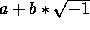
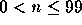
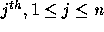
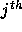

Write a program that will solve a n by n system of simultaneous equations where the coefficients of the equations are complex numbers. (Recall that a complex number is an imaginary number of the form  , where a and b are real numbers.)
Input contains several datasets, each separated by an empty line. Each dataset consists of  lines each containing
n+1 complex numbers in the form (a,b).
The  , complex number at line i is the coefficient of the  unknown in
the  equation and the last complex number at line i represents
the right-hand side of the
equation and the last complex number at line i represents
the right-hand side of the  equation.
equation.
The output for each dataset consists of n lines containing pairs of the form (a,b).
The pair on line i of output represents the  root of the input system of equations. Each pair is to be printed in parenthesis with numbers accurately rounded to one digit to the right of the decimal point, as the sample below. In case the input system of equations can not be uniquely solved, your program should produce the sentence ``No solution" as output.
root of the input system of equations. Each pair is to be printed in parenthesis with numbers accurately rounded to one digit to the right of the decimal point, as the sample below. In case the input system of equations can not be uniquely solved, your program should produce the sentence ``No solution" as output.
Print a blank line between datasets.
(1,0) (2,0) (3,0) (14,0) (2,0) (3,0) (4,0) (20,0) (3,0) (4,0) (4,0) (23,0) (1,0) (2,0) (3,0) (4,0) (2,0) (4,0) (6,0) (8,0) (3,0) (4,0) (5,0) (26,0)
(1.0,0.0) (2.0,0.0) (3.0,0.0) No solution